Rosetta DBT Studio
1.6.1 is here.
A major update featuring native Query Results and Run History in the bottom panel, alongside new AI tools, cloud downloads, and workflow improvements.
- Headline · Query Results & Run History (#327) — native bottom-panel tabs with Preview, SQL, History, Bookmarks, and full dbt command tracking.
- AI Agent in Terminal (#348) — one-click assist action, right where your command output lands.
- HTML Viewer in Editor (#352) — rendered output alongside your source, native in the editor pane.
- Cloud Explorer downloads (#318) — pull cloud objects directly into the app, no browser detour.
- Pipelines Getting Started tab + Cloud Logs (#349) — auto-expanding logs, built-in onboarding.
- Secrets loading & Push to Cloud recovery (#350) — reliable config, smoother deploys.
- Saved Queries one-click open + SQL dirty indicator (#351) — less clicking, better editor feedback.
- Quality sweep — pie chart labels, Cloud Logs fullscreen landing, Run History loading-state recovery (#353, #357, #359).
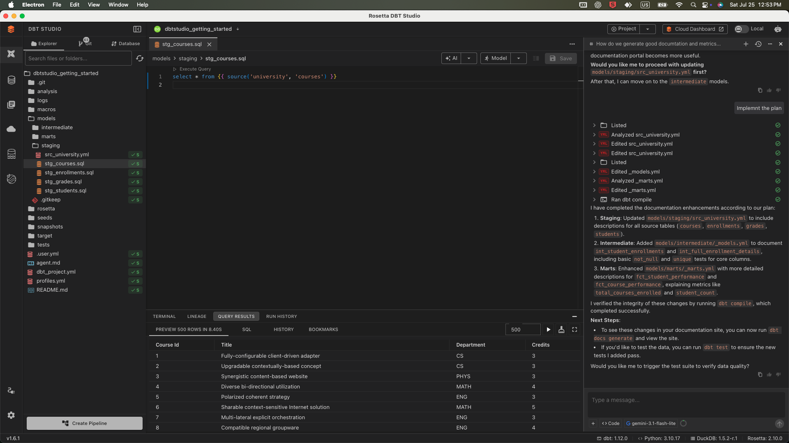
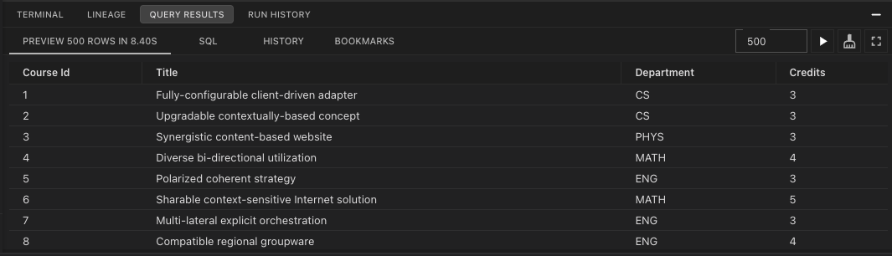
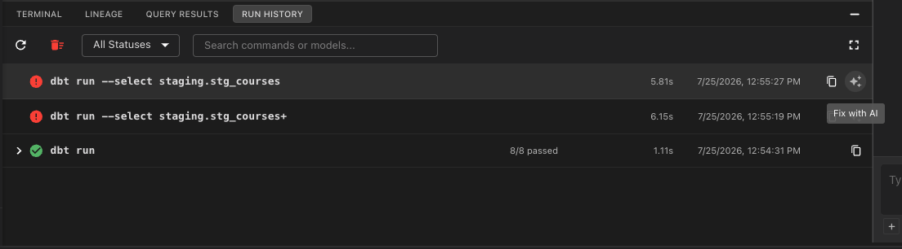
Two new tabs.
One bottom panel.
Right next to TERMINAL and LINEAGE live two new neighbors — QUERY RESULTS for SQL output and RUN HISTORY for every dbt command.
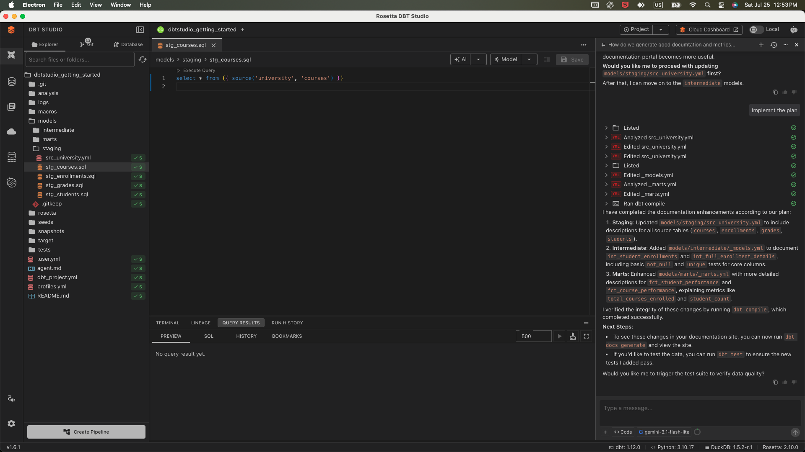
Your rows.
Right there.
Run a model. The grid lands in Preview. Row count, elapsed time, pagination, export. Not a modal. Not scrollback. Just a result where you expect it.
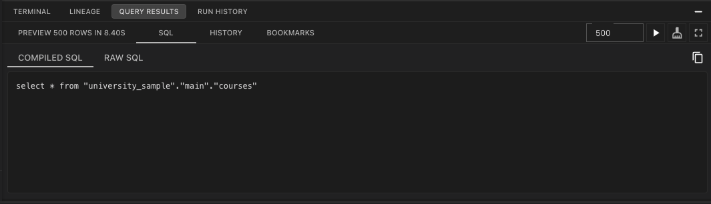
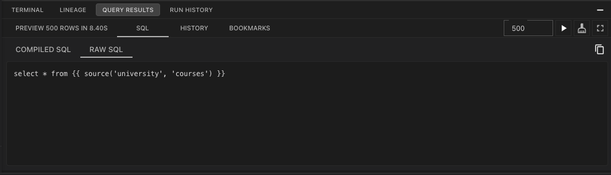
Two views of
the same query.
Because dbt compiles Jinja, you get both: Compiled SQL — the text that actually hit your warehouse — and Raw SQL — the source you wrote. Either one, one-click copy.
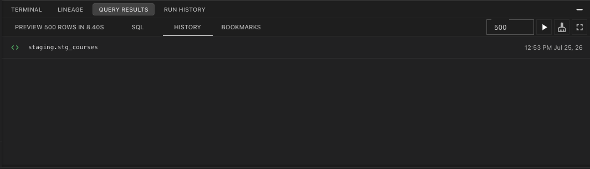
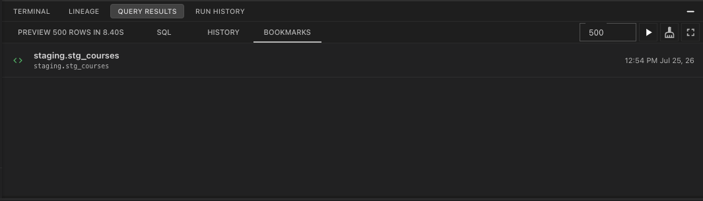
Yesterday's query.
One click away.
History remembers every execution: green <> icon, truncated SQL, timestamp. Hover for ▶ Run or ☆ Bookmark. Bookmark the keepers with a name and tags — persisted per project.
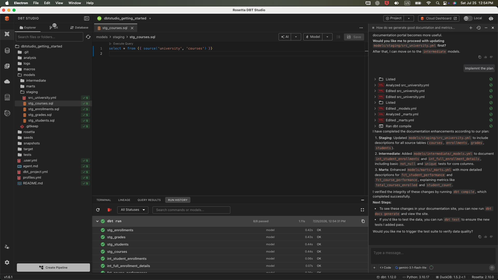
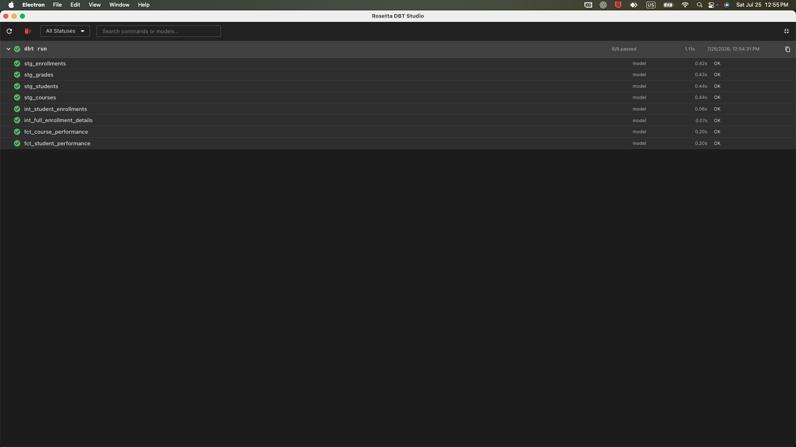
Every dbt command.
Remembered.
dbt run, test, build, compile, seed, snapshot, deps, debug — all of it. Parent row: status, counts, duration, invocation id, copy-command. Expand: every model, every test.
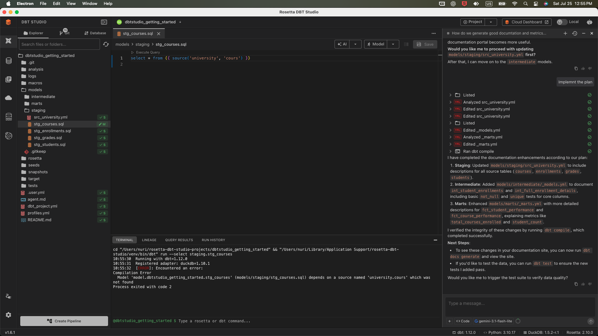
When things break.
See exactly where.
When a run fails, you don't have to scroll through the terminal logs. The failed model is highlighted right there in the history. No digging required.
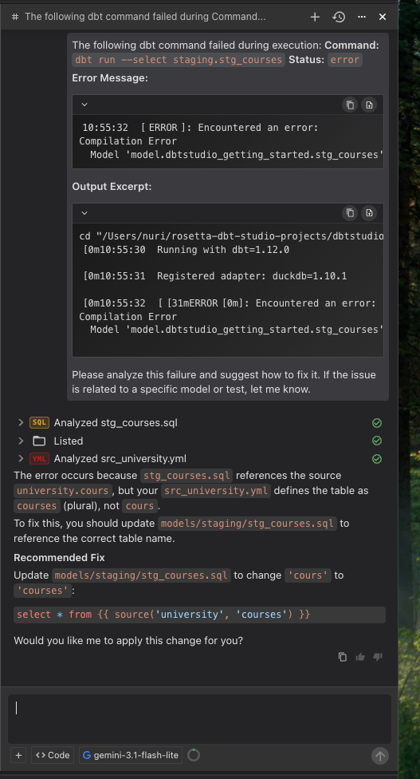
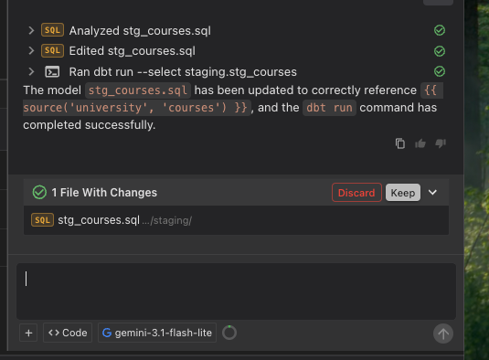
Fix with AI.
Review and apply.
Click Explain failure, and the AI Agent reads the error, diagnoses the problem, and proposes a fix. You just review and apply the changes directly to your code.
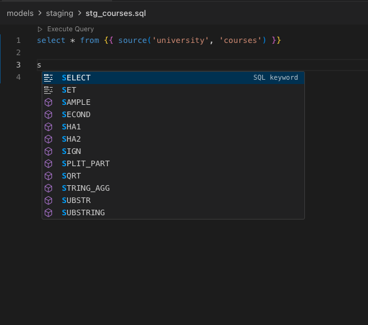
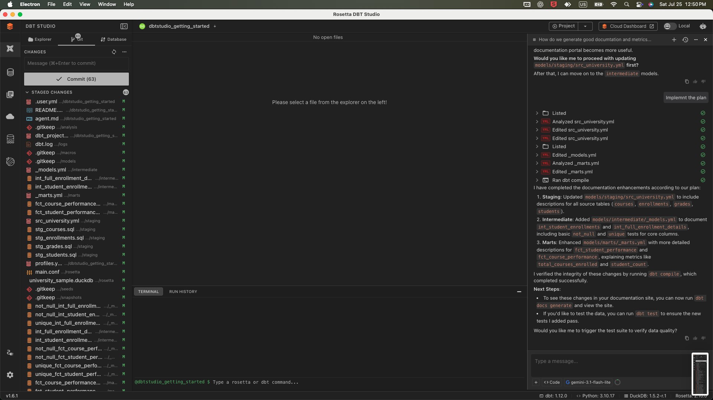
The IDE you expect.
Built right in.
This completes the workflow. The Monaco editor gives you full Jinja and SQL autocomplete, sitting right next to a built-in visual Git interface for version control.
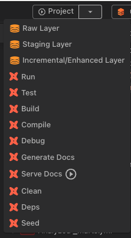
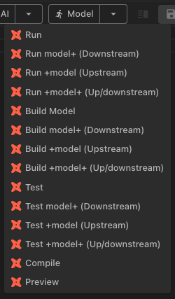
Run anything.
Visually.
Visual dropdowns let you trigger any dbt command without touching the CLI. Run the whole project, or just run upstream and downstream from one specific model.
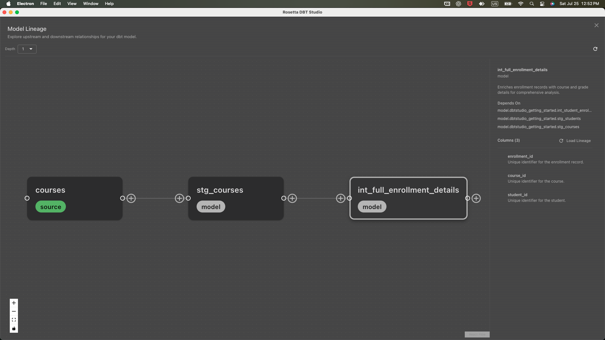
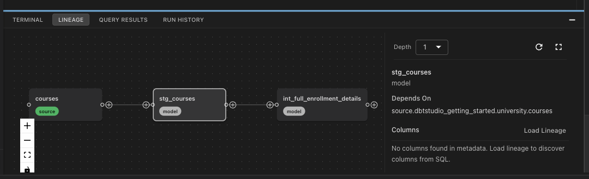
Lineage that
actually works.
An interactive lineage graph that updates as you type, right there in the bottom panel alongside your query results, or toggle it to fullscreen when you need the big picture.
All of it.
In one window.
The rows. The runs. The history. The bookmarks.
Query Results and Run History in DBT Studio 1.6.1.